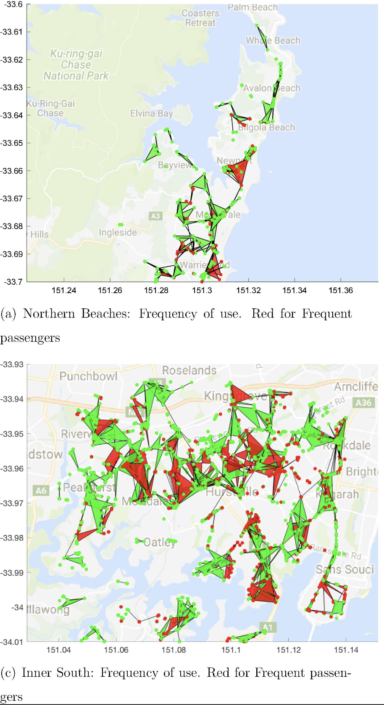

Civil 774 - Studies in Transportation 1
Smart Infrastructure Analytics
Week 5: Statistics for Machine Learning
Dr Minh Kieu
Department of Civil and Environment Engineering, University of Auckland
These slides:
http://bit.ly/774-5
In machine learning, computers apply statistical learning techniques to automatically identify patterns in data. These techniques can be used to make highly accurate predictions.
http://www.r2d3.us/visual-intro-to-machine-learning-part-1/I recommend reading Domingos (2012) A Few Useful Things to Know About Machine Learning
https://homes.cs.washington.edu/~pedrod/papers/cacm12.pdfData alone is not enough. Machine learning is not magic; it can’t get something from nothing.
More data beats a cleverer algorithm. You should focus your efforts on your domain knowledge and data before optimising your choice of algorithms. Prefer to do simple things until you have to increase complexity. You should not rush into neural networks because you think they’re cool.
Data analytics with machine learning

Learning with a 'label'
Supervised Learning: Learning with a 'label'

Urban Flow Data: Google Travel time

Nguyen et al. (2019) A Deep Learning System for Travel Speed Predictions on Multiple Arterial Road Segments. Transportation Research Record: Journal of the Transportation Research Board

Learning WITHOUT a 'label'
Urban Flow Data: Smart Card data
Kieu et al. (2018) Large-scale transit market segmentation with spatial-behavioural features. Transportation Research Part C: Emerging Technologies 90, 97-113
Kieu et al. (2014) Passenger Segmentation Using Smart Card Data. IEEE Transactions of Intelligent Transport Systems 16 (3), 1537 - 1548

Learning by rewards